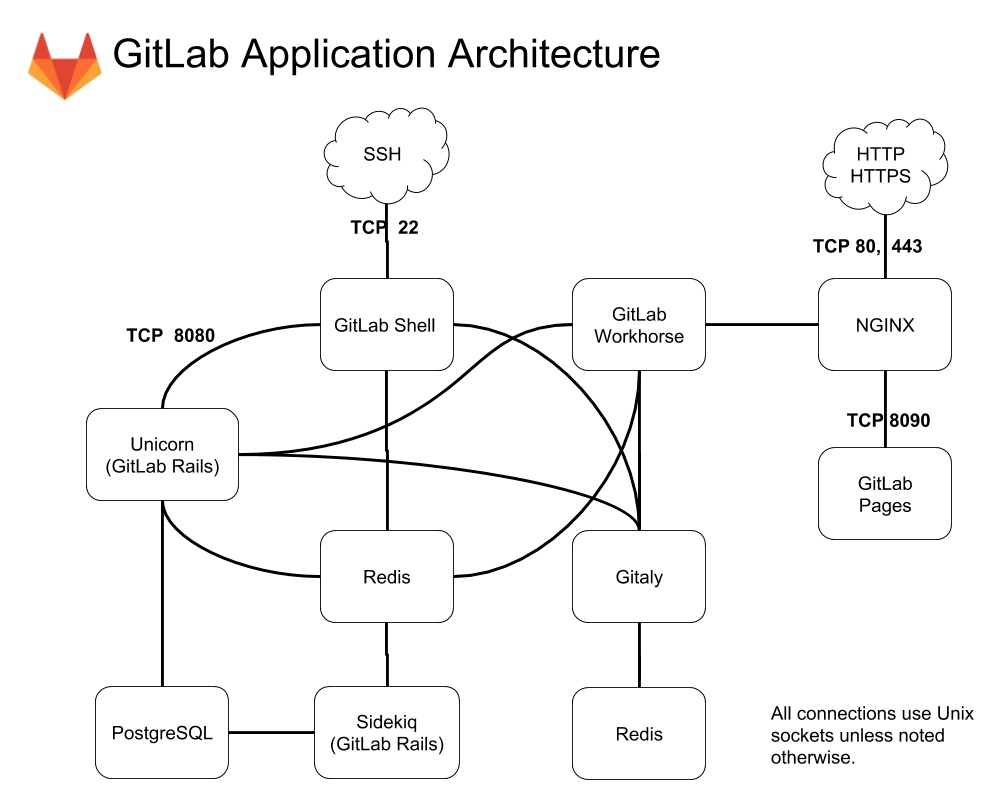

GitLab Architecture Overview
Software delivery
There are two software distributions of GitLab: the open source Community Edition (CE), and the open core Enterprise Edition (EE). GitLab is available under different subscriptions.
New versions of GitLab are released in stable branches and the master branch is for bleeding edge development.
For information, see the GitLab Release Process.
Both EE and CE require some add-on components called gitlab-shell and Gitaly. These components are available from the gitlab-shell and gitaly repositories respectively. New versions are usually tags but staying on the master branch will give you the latest stable version. New releases are generally around the same time as GitLab CE releases with exception for informal security updates deemed critical.
Physical office analogy
You can imagine GitLab as a physical office.
The repositories are the goods GitLab handles. They can be stored in a warehouse. This can be either a hard disk, or something more complex, such as a NFS filesystem;
Nginx acts like the front-desk. Users come to Nginx and request actions to be done by workers in the office;
The database is a series of metal file cabinets with information on:
- The goods in the warehouse (metadata, issues, merge requests etc);
- The users coming to the front desk (permissions)
Redis is a communication board with “cubby holes” that can contain tasks for office workers;
Sidekiq is a worker that primarily handles sending out emails. It takes tasks from the Redis communication board;
A Unicorn worker is a worker that handles quick/mundane tasks. They work with the communication board (Redis). Their job description:
- check permissions by checking the user session stored in a Redis “cubby hole”;
- make tasks for Sidekiq;
- fetch stuff from the warehouse or move things around in there;
GitLab-shell is a third kind of worker that takes orders from a fax machine (SSH) instead of the front desk (HTTP). GitLab-shell communicates with Sidekiq via the “communication board” (Redis), and asks quick questions of the Unicorn workers either directly or via the front desk.
Gitaly is a back desk that is specialized on reaching the disks to perform git operations efficiently and keep a copy of the result of costly operations. All git operations go through Gitaly.
GitLab Enterprise Edition (the application) is the collection of processes and business practices that the office is run by.
System Layout
When referring to ~git in the pictures it means the home directory of the git user which is typically /home/git.
GitLab is primarily installed within the /home/git user home directory as git user. Within the home directory is where the gitlabhq server software resides as well as the repositories (though the repository location is configurable).
The bare repositories are located in /home/git/repositories. GitLab is a ruby on rails application so the particulars of the inner workings can be learned by studying how a ruby on rails application works.
To serve repositories over SSH there's an add-on application called gitlab-shell which is installed in /home/git/gitlab-shell.
Components

A typical install of GitLab will be on GNU/Linux. It uses Nginx or Apache as a web front end to proxypass the Unicorn web server. By default, communication between Unicorn and the front end is via a Unix domain socket but forwarding requests via TCP is also supported. The web front end accesses /home/git/gitlab/publicbypassing the Unicorn server to serve static pages, uploads (e.g. avatar images or attachments), and precompiled assets. GitLab serves web pages and a GitLab API using the Unicorn web server. It uses Sidekiq as a job queue which, in turn, uses redis as a non-persistent database backend for job information, meta data, and incoming jobs.
The GitLab web app uses MySQL or PostgreSQL for persistent database information (e.g. users, permissions, issues, other meta data). GitLab stores the bare git repositories it serves in /home/git/repositories by default. It also keeps default branch and hook information with the bare repository.
When serving repositories over HTTP/HTTPS GitLab utilizes the GitLab API to resolve authorization and access as well as serving git objects.
The add-on component gitlab-shell serves repositories over SSH. It manages the SSH keys within /home/git/.ssh/authorized_keys which should not be manually edited. gitlab-shell accesses the bare repositories through Gitaly to serve git objects and communicates with redis to submit jobs to Sidekiq for GitLab to process. gitlab-shell queries the GitLab API to determine authorization and access.
Gitaly executes git operations from gitlab-shell and the GitLab web app, and provides an API to the GitLab web app to get attributes from git (e.g. title, branches, tags, other meta data), and to get blobs (e.g. diffs, commits, files).
You may also be interested in the production architecture of GitLab.com.
Installation Folder Summary
To summarize here's the directory structure of the git user home directory.
Processes
`ps aux | grep '^git'`
GitLab has several components to operate. As a system user (i.e. any user that is not the git user) it requires a persistent database (MySQL/PostreSQL) and redis database. It also uses Apache httpd or Nginx to proxypass Unicorn. As the git user it starts Sidekiq and Unicorn (a simple ruby HTTP server running on port 8080 by default). Under the GitLab user there are normally 4 processes: unicorn_rails master (1 process), unicorn_rails worker (2 processes), sidekiq (1 process).
Repository access
Repositories get accessed via HTTP or SSH. HTTP cloning/push/pull utilizes the GitLab API and SSH cloning is handled by gitlab-shell (previously explained).
Troubleshooting
See the README for more information.
Init scripts of the services
The GitLab init script starts and stops Unicorn and Sidekiq.
`/etc/init.d/gitlab
Usage: service gitlab {start|stop|restart|reload|status}`
Redis (key-value store/non-persistent database)
`/etc/init.d/redis
Usage: /etc/init.d/redis {start|stop|status|restart|condrestart|try-restart}`
SSH daemon
`/etc/init.d/sshd
Usage: /etc/init.d/sshd {start|stop|restart|reload|force-reload|condrestart|try-restart|status}`
Web server (one of the following)
`/etc/init.d/httpd
Usage: httpd {start|stop|restart|condrestart|try-restart|force-reload|reload|status|fullstatus|graceful|help|configtest}
$ /etc/init.d/nginx
Usage: nginx {start|stop|restart|reload|force-reload|status|configtest}`
Persistent database (one of the following)
`/etc/init.d/mysqld
Usage: /etc/init.d/mysqld {start|stop|status|restart|condrestart|try-restart|reload|force-reload}
$ /etc/init.d/postgresql
Usage: /etc/init.d/postgresql {start|stop|restart|reload|force-reload|status} [version ..]`
Log locations of the services
gitlabhq (includes Unicorn and Sidekiq logs)
/home/git/gitlab/log/containsapplication.log,production.log,sidekiq.log,unicorn.stdout.log,githost.logandunicorn.stderr.lognormally.
gitlab-shell
/home/git/gitlab-shell/gitlab-shell.log
ssh
/var/log/auth.logauth log (on Ubuntu)./var/log/secureauth log (on RHEL).
nginx
/var/log/nginx/contains error and access logs.
Apache httpd
- Explanation of Apache logs.
/var/log/apache2/contains error and output logs (on Ubuntu)./var/log/httpd/contains error and output logs (on RHEL).
redis
/var/log/redis/redis.logthere are also log-rotated logs there.
PostgreSQL
/var/log/postgresql/*
MySQL
/var/log/mysql/*/var/log/mysql.*
GitLab specific config files
GitLab has configuration files located in /home/git/gitlab/config/*. Commonly referenced config files include:
gitlab.yml- GitLab configuration.unicorn.rb- Unicorn web server settings.database.yml- Database connection settings.
gitlab-shell has a configuration file at /home/git/gitlab-shell/config.yml.
Maintenance Tasks
GitLab provides rake tasks with which you see version information and run a quick check on your configuration to ensure it is configured properly within the application. See maintenance rake tasks. In a nutshell, do the following:
`sudo -i -u git
cd gitlab
bundle exec rake gitlab:env:info RAILS_ENV=production
bundle exec rake gitlab:check RAILS_ENV=production`
Note: It is recommended to log into the git user using sudo -i -u git or sudo su - git. While the sudo commands provided by gitlabhq work in Ubuntu they do not always work in RHEL.
GitLab.com
We've also detailed our architecture of GitLab.com but this is probably over the top unless you have millions of users.
Copyright © 2015 Powered by MWeb, Theme used GitHub CSS.